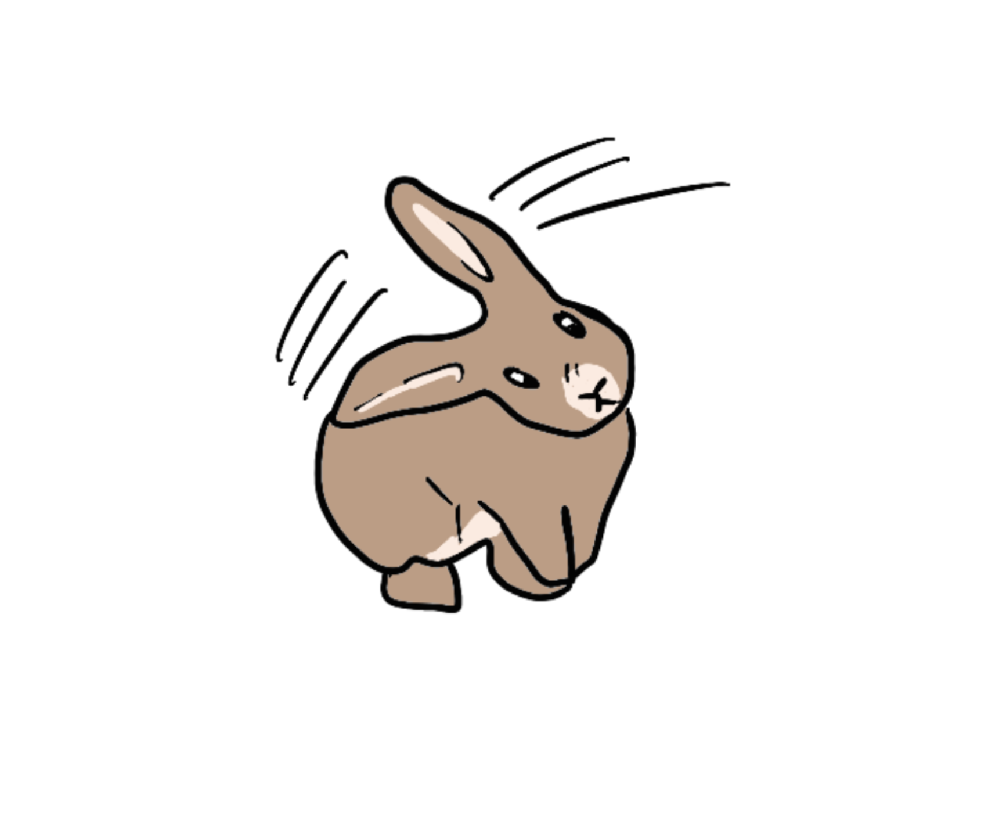

Behavior

Ear Shaking
- A rabbit shaking its ears or head often signals excitement and an invitation to play. This behavior is common when they are eager to be let out of their cage or are anticipating playtime
- Ear shaking can also be a response to itchiness. If the rabbit is shaking its ears frequently, it may be trying to relieve discomfort caused by irritation
- Repetitive ear shaking might indicate health problems such as ear mites or an ear infection. This is typically accompanied by other symptoms like excessive scratching, redness, or fur loss around the ears
- Sometimes, rabbits shake their ears as a sign of annoyance or disinterest, particularly if they dislike a smell or do not want to be handled

Loaf
- A rabbit loafing indicates that it feels safe and secure in its environment. This is generally a positive sign, suggesting the rabbit is relaxed and content
- If a rabbit chooses to loaf near you, it signifies that they trust you and see you as a non-threatening presence
Dig
- Domestic rabbits may dig when they are bored or under-stimulated. This behavior can become repetitive and may indicate that the rabbit needs more mental or physical engagement
- Digging can also serve as a coping mechanism for stress or anxiety. If a rabbit feels threatened or uncomfortable in its environment, it may dig to create a sense of security
- Rabbits often learn that digging gets them attention from their owners. If they dig and receive a response, they may continue this behavior to solicit interaction or treats.
- Rabbits may dig to create a cozy spot to rest or to manipulate their environment. This includes digging into blankets or bedding to make a comfortable nest
Flooped
- Flopping is a clear indication that the rabbit feels completely relaxed and safe in its environment. It demonstrates trust in its surroundings and the people present. This behavior often occurs when a rabbit is ready to nap or rest, showcasing their contentment.
- A rabbit that flops is expressing that it feels secure enough to let its guard down. This is particularly significant for new rabbit owners, as witnessing this behavior can be reassuring that the rabbit has acclimated well to its home
Circling
- Circling around a person's feet is often a sign of affection. Rabbits may do this when they are excited to see you, especially when you enter a room or after you've been away for a while. This behavior can be accompanied by happy sounds like honking or oinking, indicating their joy and eagerness for interaction or treats
- Circling can also indicate that your rabbit is feeling playful and is inviting you to engage with them. This is similar to other playful behaviors like binkies or zoomies, where the rabbit expresses its happiness and energy
- For unneutered or unspayed rabbits, circling can be a mating behavior. This is particularly common when they reach sexual maturity, which can occur as early as 10 to 12 weeks for males and slightly later for females. In this context, circling may signify a desire to mate or establish dominance
- Rabbits often learn that circling leads to attention or treats from their owners. If your rabbit circles you while looking expectantly, it may be trying to communicate that it wants food or playtime
Chewing
- Rabbits have continuously growing teeth that need to be worn down through chewing. This behavior is essential for their dental health, as it prevents their teeth from becoming overgrown and causing painful issues like mouth ulcers or malocclusion.
- Chewing allows rabbits to explore and manipulate their environment. They use their teeth to investigate objects, which helps them understand their surroundings better.
- In captivity, rabbits may chew on furniture or other inappropriate items if they are bored or lack sufficient enrichment in their environment. This behavior can become destructive if the rabbit is not provided with adequate toys or activities to keep them engaged.
- Chewing can also be a response to frustration, especially if a rabbit feels confined or restricted in its space. This is common when they are put back in their enclosure after playtime, leading to unwanted chewing behaviors.
- Rabbits may chew on things to get attention from their owners. If they learn that chewing leads to interaction (even if it's negative), they might continue this behavior as a way to engage with you.
Binky
- Binkying is primarily a sign that a rabbit feels happy, relaxed, and safe. It often occurs when they are playing, exploring, or simply enjoying their environment.
- Rabbits may also binky to let off steam, especially after being confined for a period. This behavior can be seen when they have the freedom to run around and play.
- Binkying is considered normal and is a positive indicator of your rabbit's well-being. While not all rabbits will binky, those that do are typically very content.
- It can also occur if a rabbit feels threatened or scared. In such cases, the binky may be accompanied by erratic movements as the rabbit attempts to evade perceived danger.